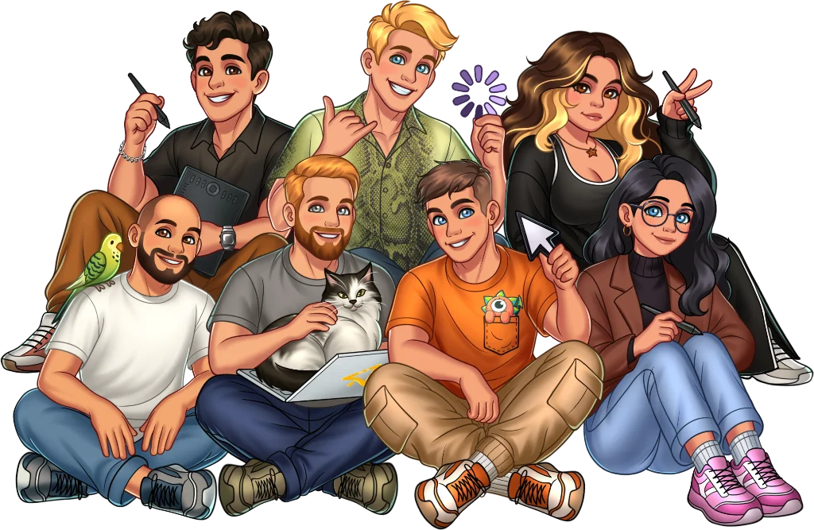

每周做演示，我用 Sweezy Cursors 把光标切换串成了一条流水线
设计稿演示、录屏教程、主题切换——三种场景共用一套光标素材和一个固定方案，Sweezy Cursors 嵌进去之后，我再也没在指针选项卡里手动点过 Browse。
我每周要做三件事：给客户演示设计稿、录一条功能上手视频、换一套贴合当天心情的桌面主题。以前这三件事里都藏着同一个隐性步骤——光标。演示用一套干净的极简箭头，录屏需要一个清晰的高亮小手配合旁白，主题换了光标就得跟着换。每一次都要打开"鼠标设置→指针→Browse"，在下载文件夹里翻半天找对应的 .cur 文件，偶尔还会撞见"未指定"——文件被我哪天挪走了，Windows 默默地回退到默认白箭头。
这个痛点我忍了小一年，直到把Sweezy Cursors官网的光标素材插进这条流水线，才发现原来这三件事可以共用一套素材库、一个固定文件夹，切换一次点一下就行。
旧流程拆解：三个独立动作浪费的不是时间，是注意力
以前我没把光标切换当成一个值得单独优化的环节——毕竟 Browse 一下也就几秒钟。但把一周的操作串起来看，它其实是三次独立的手动劳动：
演示前：翻 Downloads 找 minimal-arrow.cur，绑定 Normal Select 和 Link Select，点应用。录屏前：翻 Downloads 找 highlight-hand.ani，重新绑定那两个角色，点应用。换主题后：翻 Downloads 找对应的光标包，可能还要解压、可能同时有 CUR 和 ANI 两份，重复绑定动作。
三次 Browse + 三次应用 + 偶尔一次找不到文件（回退默认）。可数的浪费：少了两次手动复制素材到永久目录、少了每次翻 Downloads 的决策成本——更重要的是，每次切换都把我从"演示准备"的主任务里拽出来，去做一件和当前目标完全无关的文件管理。
我试过一个变通：把所有光标文件放一个文件夹。问题是那个文件夹越堆越乱，主题用光标的 GIF 和演示用光标的 CUR 混在一起，Browse 还是要找。根因不是文件位置，而是我没有一条清晰的"素材生成→归档→绑定"的链路。
新流程：Sweezy 插在中间，前后各接一个零成本动作
现在这条链是这样的：素材来源（Sweezy 网站 + Constructor）→ 归档到 C:\Windows\Cursors\Sweezy\ 固定目录 → Windows 指针方案一键切换。Sweezy 解决了前半段——不用自己画光标、不用手动转格式；后半段是 Windows 原生机制——保存成方案之后，切换就是下拉菜单里选一下。
上游：从 Sweezy 拿素材，两种入口按需用
大部分场景我直接从 Sweezy 网站选现成的光标包。分类里按风格分好了——极简、游戏、可爱、卡通，每个包都会标注提供 CUR 还是 ANI。演示用极简静态 CUR，录屏用高亮 ANI，主题切换时跟着主题色选对应的包。下载点完直接落盘。
但我偶尔需要定制的情况——比如客户品牌的主色调是薄荷绿，现成的光标里没有这个色。这时候用 Cursor Constructor：上传一张 PNG（我从 Figma 里截一个品牌图标），拖一下热点位置（就是光标里那个实际点击命中的点，剑尖光标要把热点拖到剑尖，默认在左上角会错位），预览一下，下载 .cur 文件。整个流程在浏览器里完成，不用装任何软件。
还有一次我需要一个动画光标来配合录屏里的"点击放大"效果——Constructor 同样支持 GIF 上传转成 .ani，帧间隔循环模式都是自动处理的。
下游：归档和方案绑定，一次性做好永远省事
Sweezy 官方文档里提了一个我以前没注意到的细节：Windows 存的是文件的绝对路径。如果你把文件从 Downloads 挪到了 Documents，系统找不到那个路径就自动回退默认光标——这就是我以前时不时撞见"未指定"的原因。
所以归档这一步必须做死：把所有 Sweezy 下载的和 Constructor 生成的 .cur / .ani 文件统一放进 C:\Windows\Cursors\Sweezy\。这个路径是 Windows 自带的，不会被磁盘清理工具扫掉，也不会因为重装系统（只要没格式化 C 盘用户目录）丢失。缺点是第一次写入需要管理员权限，但我用一次 UAC 弹框换了以后不用再操心。
归档完之后打开指针选项卡，把 Sweezy 里的光标分别绑定到 Normal Select 和 Link Select——其余角色（文字选择、忙碌、精确选择）我保持系统默认，没必要整套都换。绑定完点"另存为"，给方案起个能认出来的名字，比如"演示-极简箭头"、"录屏-高亮手"、"主题-薄荷绿"。
至此这条流水线就搭完了。以后切换场景就是：打开指针选项卡 → 下拉菜单选方案 → 确定。整个过程不超过三秒。

最容易断链的两个环节，提前堵上
跑了两个月，这条链里有两个地方出过问题，我把它们记录下来避免后来再踩。
环节一：热点位置错位
Cursor Constructor 里上传图片之后，默认热点在左上角 (0, 0)。我第一次用一个剑图标做光标时没改热点，结果鼠标悬停链接上时，箭头的剑尖离实际点击位置差了一整个图标的距离——点链接总是点不准。解决办法很简单：上传完图片之后，拖一下预览框里那个十字准星到你想要的位置，剑尖光标就对准剑尖。
这个细节样本文档里提了一句，我当时没在意，直到实际出问题才回头翻。Sweezy Cursors文档虽然薄，但每个点都是踩过坑之后写的，别跳着读。
环节二：方案丢失
有一次 Windows 更新之后，我保存的三个方案全不见了——指针选项卡的下拉菜单里只有默认的"Windows 默认（系统方案）"。我当时慌了一下，后来查文档才知道：Windows 方案文件存在 %SystemRoot%\Cursors\ 下，但系统更新偶尔会清掉用户自定义方案。
解决办法是定期把方案文件备份到网盘。其实 Sweezy 的文档里也提了"记得另存为方案"，但没说备份——我自己补了这一步，每周五把 C:\Windows\Cursors\*.cur 和方案文件一起同步到夸克网盘的一个文件夹里，也就几百 KB，不占空间。
效果和边界：省了多少，什么时候不划算
用量化的话说，这条链帮我省掉了：每周 3 次 Browse 动作、偶尔 1 次找不到文件回退默认的尴尬、每次切换时从主任务被拽出来的注意力中断。如果算时间，单次切换从 15~20 秒降到 3 秒，一周省大概 2 分钟——不多，但省下来的是决策注意力，这比纯时间更值钱。
但这套流程也有边界，不是所有场景都适用：
- 如果你从来不换光标：那 Sweezy 对你就是纯装饰，没必要特意搭流水线。
- 如果用的是 macOS：样本文档里没覆盖 Mac 的光标格式（
.icns），Sweezy 主要做 Windows CUR/ANI 和浏览器扩展。 - 如果你需要系统层面深度定制：比如整套十几种指针角色全部换成统一风格，Sweezy 的光标包只重点覆盖 Normal Select 和 Link Select，其余角色要自己补。我个人觉得没必要——只有那两个角色你 90% 的时间能看到。
浏览器扩展是另一条线——Sweezy 有 Chrome/Edge 扩展，装完之后网页里的光标自动换成你选的风格，和 Windows 系统光标是分开的。我用扩展做辅助，主要场景是演示客户的网页原型时，扩展里的光标风格和系统光标保持一致，观众不会在演示过程中被不同的光标样式干扰。
写在最后
Sweezy 这类工具很容易被归到"桌面美化"的休闲品类里，但把它嵌进一条固定的工作流之后，它就从"玩一玩"变成了"省心思"。我以前没把光标切换当成需要优化的环节，因为每次单独看都是几秒钟的小事——但把一周所有的小动作串起来，它们其实是同一件事在反复发生。
如果你也有类似的隐性重复劳动——每次 Browse 找素材、每次手动整理、每次忘了备份方案——不妨停下来看看那个工具能不能插进你已有的流程里。Sweezy 网站上有所有光标包和 Constructor 入口，下载直接出 CUR/ANI 文件，不需要注册登录。整理好的文件放进系统自带的 Cursors 目录，绑定一次方案，以后就是下拉菜单里选一下的事。
光标本身不是生产力工具，但把它嵌进一套完整的工作流之后，那些零碎的小动作就消失了。我把整理过的光标素材和相关文档同步放在三个代码仓库里，方便随时拉取和备份：GitHub、Gitee、GitCode，国内访问哪个顺畅就用哪个。